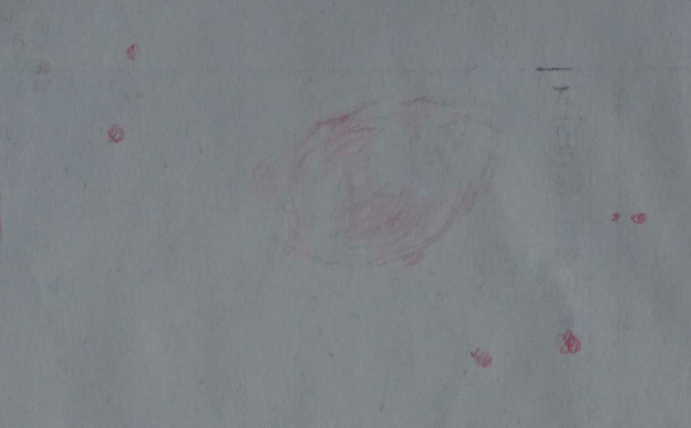

별자리
여우
종류
행성상성운
적경
19시 59.6분
밝기
7.3등급
크기
80' * 40'
적위
22도 43분

병창이 형의 '먹다 버린 사과'란 표현이 가장 어울린다. 사과의 양쪽 꼭지 부분이 가장 진하며 표면 밝기는 고르지 않다. (아래 또는 위가 더 진했는데, 기억이 안난다)
주변시로 볼 때 양 옆으로 엷게 퍼져 나가는 것이 보인다.
스케치를 효율적으로 하기 위해 Olll 필터를 사용했다. (별의 숫자가 1/4 정도로 줄어 들고, 성운도 전체적으로 어두워지나, 밝기 대비가 증가한다.)
C11이 도립상을 보여주기에 사진 촬영 후 포토스케이프에서 좌우를 바꾸었다. 윗쪽이 북쪽으로 생각되며, 오른쪽 4개의 별은 별바라기 성도에서 확인이 되나, 왼쪽 2~3개 별은 성도의 모양과 잘 안 맞는다.11" 74배 시야: 20'
망원경 종류
셀레스트론 C11, F/4.2, 초점거리: 2800mm
아이피스
하이패리온 38mm 아이피스
Filter
Olll 필터
관측일시
2021. 11. 6. 20:00
관측장소
강원 화천군
4
2
약 6등급
4
기타 관측 환경
장비는 너무나 좋았지만, 스케치 준비를 제대로 못했고, 빨간 조명 아래 딱딱한 빨간색연필이라 스케치에 최악의 상황이었다. 더욱이 관측 초반이라 망원경으로 보이는 모습에 제대로 적응하지 못한 상태였다. 결국 관측을 짧게 끝냈으며 (사실상 포기) 표면 밝기 차이, 세부 모습 등을 표현하지 못했다.
97/9/5 별바라기 홈 (starflower2020@protonmail.com)